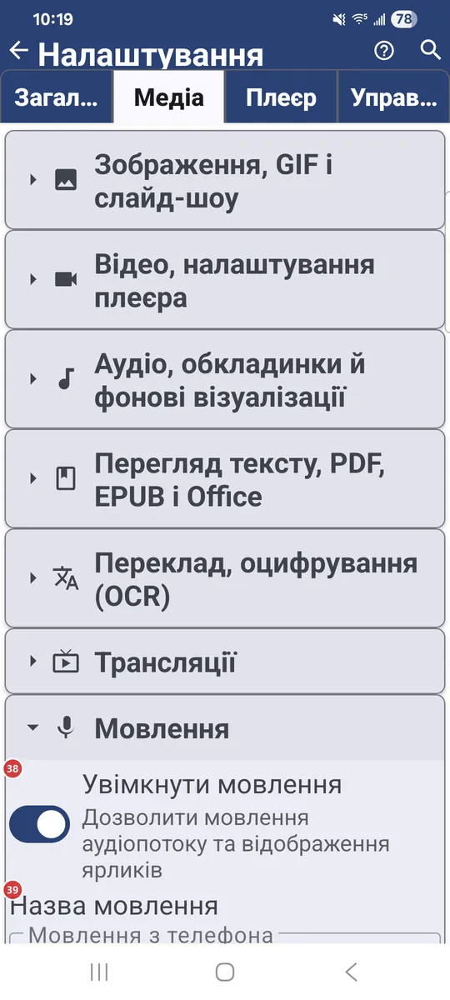
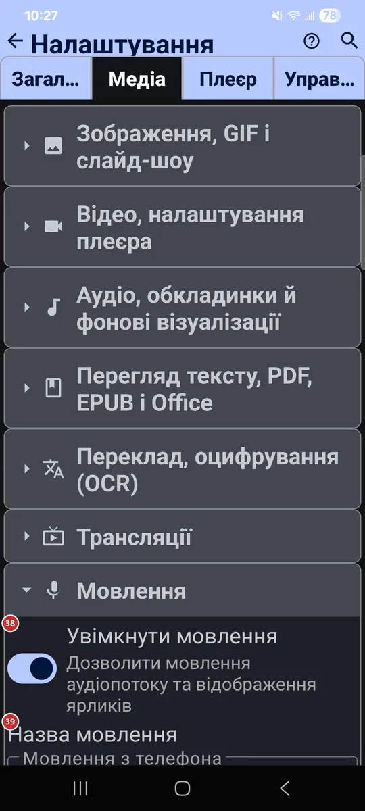

Налаштування: Медіа
Для чого цей екран
На вкладці «Медіа» ви вирішуєте, які види файлів обробляє застосунок і як поводиться кожен вид: зображення, відео, аудіо, документи, переклад, трансляції та живе мовлення.


Порядок дій
Єдиного порядку тут немає - кожен параметр працює сам по собі. Вкладка згортається в групи, по одній на кожен вид медіа, і в кожній групі перелічено її параметри. Деякі групи, наприклад «Трансляції» та «Мовлення», є лише в тих версіях застосунку, де вони передбачені.
Елементи
Зображення, GIF і слайд-шоу
1Підтримка статичних зображеньДозволяє застосунку показувати статичні зображення.
Стають доступними JPG, PNG, WEBP, HEIC та інші формати. Вимкніть, якщо застосунок не потрібен вам для картинок.
2Підтримка GIF анімаціїВідтворює анімовані GIF у браузері файлів і плеєрі.
Увімкніть, щоб GIF рухалися. На цій самій сторінці задаються обмеження розміру для зображень і анімацій.
3Завантажувати зображення повністюЗавантажує зображення у початковій роздільності, щоб їх можна було збільшувати.
Вмикає жести масштабування щипком і повороту у режимі панелі команд, але витрачає більше трафіку й пам’яті. За замовчуванням зображення завантажуються з роздільністю 1920 px; мережею для збільшення завантажується оригінал, і це повільніше.
4Обрізати зображення на весь екранЗаповнює весь екран, якщо орієнтація зображення й пристрою збігається.
У повноекранному режимі та слайд-шоу горизонтальне зображення на горизонтальному екрані (або вертикальне на вертикальному) обрізається за розміром екрана. Коли параметр вимкнено, будь-яке зображення цілком вміщається в екран без обрізання.
5Динамічний фонЗаповнює порожні поля навколо зображення кольорами його країв.
Пом’якшує смуги збоку або зверху й знизу, коли зображення не збігається за формою з екраном. Простий фон зафарбовується однорідно, а складніший продовжується променями, як продовження картинки.
6Музика під час слайдшоуВмикає музику під час слайд-шоу.
Під час показу зображень і GIF грають треки з вибраного ресурсу у випадковому порядку. Виберіть ресурс зі своєю музикою; вибір з’являється, коли параметр увімкнено.
7Призначити переглядачем зображень за замовчуваннямПризначає FastMediaSorter застосунком для відкривання зображень.
Android покаже власне діалогове вікно: виберіть FastMediaSorter і натисніть «Завжди». Це не назавжди: вибір зберігається в налаштуваннях самого Android, і там його можна повернути.
Відео, налаштування плеєра
8Підтримка відеоДозволяє застосунку відтворювати відео.
MP4, MKV, MOV, WEBM та інші формати відтворюються у вбудованому плеєрі.
9Показувати мініатюри відеофайлівПоказує кадр-прев’ю для кожного відео у браузері файлів.
Перший кадр ролика стає його мініатюрою. Для мережевих файлів це може тривати дві секунди й довше: спершу файл треба завантажити й обробити.
10Відкривати відеофайли в повноекранному режиміЗапускає відео з браузера файлів одразу на весь екран.
Відео, відкрите з браузера файлів, одразу відтворюється у повноекранному режимі.
11Зберігати кадри відео в буфер обмінуЗаодно копіює кожен добутий кадр у буфер обміну.
Коли ви добуваєте кадр із відео, він ще й потрапляє у буфер обміну - його можна одразу вставити.
12Призначити відеоплеєром за замовчуваннямПризначає FastMediaSorter застосунком для відтворення відео.
Android покаже власне діалогове вікно: виберіть FastMediaSorter і натисніть «Завжди». Це не назавжди: вибір зберігається в налаштуваннях самого Android, і там його можна повернути.
Аудіо, обкладинки й фонові візуалізації
13Підтримка аудіоДозволяє застосунку відтворювати аудіо.
MP3, FLAC, AAC, OGG та інші аудіоформати стають доступними для відтворення.
14Шукати обкладинки аудіо онлайнШукає в інтернеті обкладинки для треків, у яких їх не вбудовано.
Обкладинки завантажуються з інтернету. Поруч з’являється параметр «Шукати тільки по Wi-Fi», щоб мобільний трафік не витрачався.
15Показувати випадкові фото під час відтворення аудіоПоказує випадкові фото, поки грає аудіо.
Фото беруться з вибраного ресурсу, по одному випадковому на кожну пісню. Використовуються лише нерухомі зображення, відео пропускаються.
16Візуалізатор при відсутності обкладинкиОбирає, що плеєр показує для треку без обкладинки.
Можна залишити чорний фон або обрати ноту з пульсуючими кільцями, дихаючі стовпчики, хвилі та частинки чи відеовізуалізацію.
17Призначити аудіоплеєром за замовчуваннямПризначає FastMediaSorter застосунком для відтворення музики.
Android покаже власне діалогове вікно: виберіть FastMediaSorter і натисніть «Завжди». Це не назавжди: вибір зберігається в налаштуваннях самого Android, і там його можна повернути.
Перегляд тексту, PDF, EPUB і Office
18Підтримка текстових файлів (.txt, .md, .log, .json, .xml)Дозволяє застосунку відкривати текстові файли.
Це файли .txt, .md, .log, .json і .xml.
19Підтримка PDF-документівВідкриває PDF у вбудованому переглядачі.
Для PDF є й окремий параметр із великими мініатюрами, він працює повільніше.
20Підтримка EPUB електронних книгЧитає електронні книги EPUB.
У читалці є закладки та зміст.
21Підтримка Office-документівВідкриває офісні документи у іншому застосунку.
DOC, DOCX, RTF і ODT відкриваються у зовнішньому застосунку, а не в самому FastMediaSorter.
22Призначити додатком для документів за замовчуваннямПризначає FastMediaSorter застосунком для відкривання документів.
Android покаже власне діалогове вікно: виберіть FastMediaSorter і натисніть «Завжди». Це не назавжди: вибір зберігається в налаштуваннях самого Android, і там його можна повернути.
Переклад, оцифрування (OCR)
23Дозволити розпізнавання текстуВмикає розпізнавання тексту на зображеннях і в PDF.
Текст видобувається, і його можна скопіювати. Розмір і шрифт розпізнаного тексту задаються трохи нижче.
24Увімкнути перекладВмикає переклад тексту, розпізнаного на зображеннях.
Видимий текст перекладається з вихідної мови на вибрану нижче. Пакети перекладу можна встановити в рядку завантажень.
25Вихідна моваОбирає мову тексту, який потрібно перекласти.
Кнопка обміну між двома полями мов міняє їх місцями одним натисканням.
26Перекласти наОбирає мову, якою перекладати.
Переклади з’являються цією мовою. Коли треба перекласти у зворотний бік, поміняйте мови місцями кнопкою між ними.
27Завантаження OCR та перекладуВідкриває завантаження для розпізнавання тексту й перекладу.
Установіть потрібні пакети OCR і перекладу, а потім видаліть їх, щоб звільнити місце.
Трансляції
28Увімкнути трансляціїВмикає інтернет-трансляції: аудіо, відео та RTSP.
Трансляції дають каталог каналів і відтворення онлайн-радіо та телебачення. Параметри нижче налаштовують їхню роботу.
29Порядок за замовчуваннямОбирає порядок списку каналів за замовчуванням.
Можна впорядкувати за назвою, рубрикою, мовою, країною або за часом додавання.
30Що показувати спочаткуОбирає, які канали показувати за замовчуванням.
Усі канали, лише аудіо або лише відео.
31Оновлення списку каналівВизначає, коли оновлюється список каналів.
Можна оновлювати лише на ваше прохання, пропонувати оновлення під час відкривання трансляцій або оновлювати автоматично через Wi-Fi.
32Мова аудіо для трансляційОбирає мову звуку, з якої починаються трансляції.
Доступні варіанти: за замовчуванням, англійська, російська й українська.
33Мова субтитрів для трансляційОбирає мову субтитрів, з якої починаються трансляції.
Доступні варіанти: за замовчуванням, англійська, російська й українська.
34Надрозумна буферизація трансляційДає трансляціям більший запас буфера на старті.
Трансляції стартують із більшим буфером і тихо перепідключаються, коли з’єднання нестабільне.
35Відтворювати одразуЗапускає трансляцію з іншого пристрою без питання.
Зазвичай трансляція, яку інший ваш пристрій передає сюди, чекає на ваше «Прийняти». Коли параметр увімкнено, вона починається одразу.
36Увімкнути картинку в картинціДодає до плеєра кнопку «картинка в картинці».
Плеєр також сам переходить у режим «картинка в картинці», коли ви натискаєте «Додому» (Android 12 і новіші).
37Очистити позначки відтворенняСтирає зелені та червоні позначки відтворення на всіх каналах.
Самі канали залишаються. Перед очищенням застосунок просить підтвердити дію.
- Скасування
- Видаляються лише позначки; самі канали залишаються на місці.
Мовлення
38Увімкнути мовленняДозволяє вести живе аудіомовлення з цього пристрою.
Коли параметр увімкнено, в застосунку з’являються ярлики мовлення. Параметри нижче задають назву, порт, якість звуку й роботу мікрофона.
39Назва мовленняДає мовленню назву.
Під цією назвою йде ваше мовлення. За замовчуванням - «Мовлення з телефона».
40ПортЗадає мережевий порт для мовлення.
Застосунок приймає порти від 1 до 65535. Змінюйте його, лише якщо є причина, наприклад інший застосунок уже використовує поточний порт.
41БітрейтЗадає якість звуку мовлення.
Доступні 128, 192, 256 і 320 кбіт/с. Чим вище значення, тим кращий звук і тим більше трафіку.
42Формат аудіоЗадає частоту дискретизації та кількість каналів.
Доступні 44,1 і 48 кГц, моно або стерео.
43Посилення мікрофонаЗадає гучність вашого мікрофона у мовленні.
Можна вибрати від 50% до 400%. За 100% рівень не змінюється.
44Захист від петліНе дає виникнути свисту, коли слухач поруч вмикає мовлення вголос.
Якщо мовлення звучить вголос поруч із мікрофоном, посилення мікрофона зменшується, і звук не може наростати.
Скидання
46Скинути розділ МедіаПовертає до значень за замовчуванням лише цю вкладку.
Налаштування на інших вкладках зберігаються. Перед скиданням застосунок просить підтвердити дію.